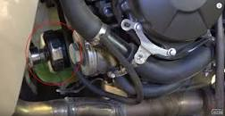
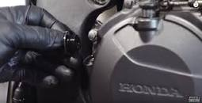
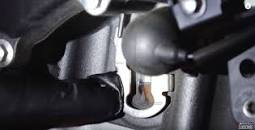

Honda CBR600RR Oil Change
About Page
Contact Page
Loosen oil-pan drain bolt and Drain oil.
Rub new oil onto replacement oil filter O-ring and Replace oil filter.
(located behind exhaust headers)

Re-insert and tighten oil-pan drain bolt to
spec
.
Fill engine with
3 quarts
of specified oil type at oil fill hole.
(located on right side of motorcycle engine)

Start motorcycle and let idle for roughly
20 seconds.
Check oil level by holding bike vertical,
while on flat gorund.
(oil level glass located bottom of right side crankcase)

CLEAN UP AFTER YOURSELF
Images property of
Partzilla.com